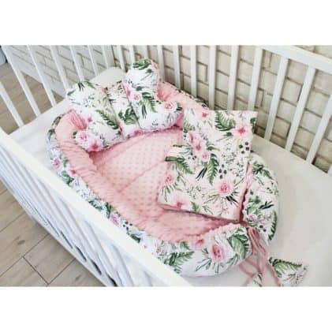

Pătură + pernă pentru bebeluși Baby Love, Roz deschis – Hanksome.ro
 Skip to content info@hanksome.ro CoșCoș
Niciun produs în coș.
BEBELUȘI CASĂ ACCESORII BIJUTERII FRUMUSEȚE STARE DE BINE CADOURI GADGETURI CREATIVITATEOFERTĂ LIMITATĂ
?LIVRARE GRATUITĂ LA TOATE COMENZILE?
Pătură + pernă pentru bebeluși Baby Love, Roz deschis
Prima pagină / BEBELUȘI⭐️ ⭐️⭐️⭐️⭐️ 43
?Oferiți-i bebelușului dvs. cel mai confortabil și drăguț set!
✅Pătură decorată cu ciucuri + pernă în formă de urs
✅Ușor și respirabil, potrivit pentru fiecare anotimp
✅Îl puteți folosi în leagăn, cărucior, ..
CUMPĂRĂTI MAI MULTE PRODUSE = REDUCERE MAI MARE
lei 145.00
Plata în numerar la livrare
Livrare rapidă
Garantat satisfacție 100%
50.000+ clienți multumiți
CE SPUN CLIENȚII DESPRE NOI?
Mulțumesc HANKSOME! Acest produs a fost cadoul perfect pentru fiica mea.
Elena CreţuVoi aveți cele mai bune prețuri de pe piață și livrare rapidă! Cu siguranță mă voi întoarce.
Isac SkutnikAm avut câteva întrebări despre brățara pe care o vând, și am obținut toate răspunsurile foarte rapid.
Ramona NectariaAm comandat aici de 3 ori acum și de fiecare dată totul a fost perfect! Livrarea a fost rapidă, iar calitatea produselor este de nota 10!
Felix EderPachetul a fost sigilat foarte bine, iar calitatea produsului a fost perfectă.
Magda LupuFără întrebări mi-au înlocuit produsul cu altceva! Aș recomanda cu siguranță să cumpărați aici.
Andrei UngureanuDescriere
Pătura Baby Love este o pătură din bumbac, moale și călduroasă, finisată cu 4 ciucuri (realizați manual). Țesătura este respirabilă și confecționată din bumbac 100% . Ornamentele pot fi eliminate.
Pătura este potrivită pentru copilul dvs. încă din prima lui zi. Oferiți-i bebelușului dvs. confort maxim la fiecare pas. Acesta este setul perfect pentru cărucior, pat, leagăn
Se spală la mașina de spălat la 30 de grade, până la 800 de rotații. Uscați pe dept pentru a menține forma perfectă. Vă recomandăm să folosiți detergent ușor și dedurizant.
✅Pătură: 75 x 100 cm
✅Pernă: 38 x 33 cm
✅Culori: roz deschis
❤️ Acesta este, de asemenea, un cadou perfect pentru nașterea bebelușului! Acest set va fi cel mai bun prieten al copilului pentru mult timp!❤️
CUMPĂRĂTI MAI MULTE PRODUSE = REDUCERE MAI MARE
lei 145.00
Plata în numerar la livrare
Livrare rapidă
Garantat satisfacție 100%
50.000+ clienți multumiți
FAQ - Întrebări frecvente
Care sunt costurile de transport?Vă trimitem pachetul gratuit, plătiți comision de 10 lei doar dacă ați ales să plătiți la livrare.
Care sunt opțiunile de plată?Puteți plăti în numerar la livrare sau cu cardul de credit sau prin Paypal.
Când primesc produsul comandat?Veți primi pachetul în 3-7 zile lucrătoare.
Pot returna produsul?Desigur, trimiteți-ne produsul înapoi cu toate informațiile necesare și apoi vom rambursa suma de achiziție.
Ce înseamnă o garanție de 100%?În caz de nemulțumire, vom rambursa banii fără întrebări!
Livrare rapida: 2-4 zile
Plata numerar la livrare
Garantat satisfacție 100%
50.000+ clienti multumiti
Reclamații Și Returnare Produs Termeni șI condiții 2020 © Hanksome.ro BEBELUȘI CASĂ ACCESORII BIJUTERII FRUMUSEȚE STARE DE BINE CADOURI GADGETURI CREATIVITATE